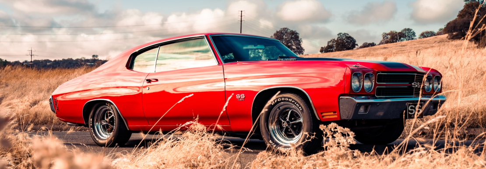

O que são Muscle cars?
Eles são imponentes, potentes e tem um ronco sem igual. Estou falando dos muscle car, os possantes clássicos
que fizeram sucesso nos anos 60/70. Herança norte-americana, os bólidos são veículos esportivos de alta
performance, com motor desenvolvido para o alto desenvolvimento e com tração traseira.
Shelby Cobra 427 (1966)
Este provavelmente é o carro sem capota mais rápido e conhecido do planeta. Carroll Shelby teve a ideia de
pôr o Ford V8 no belo AC Ace britânico e cobriu-o com a versão big block, um carro de corrida com licença
para estradas e de aceleração absurda. O bólido atingia de 0 a 160 km/h em 13s2. Não demorou muito para este
carro ser transformado em um modelo de corrida extremamente bem-sucedido.

Chevrolet Chevelle SS 454 (1970)
No ápice da guerra entre os Muscle Cars, a Chevrolet desenvolveu o carro mais potente do mundo para bater
seus principais rivais: Pontiac, Oldsmobile e Buick. Seu motor V8 poderia gerar até 450 cavalos de potência.
Sem sombras de dúvida, foi o Muscle Car mais potente até hoje.